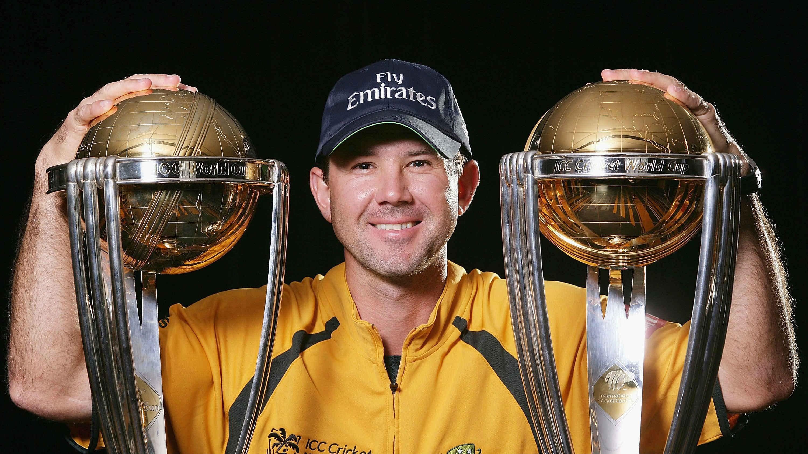

Hello I am Ricky Ponting
Ricky Thomas Ponting AO (born 19 December 1974) is an Australian cricket coach, commentator, and former cricketer.
See my ResumeRicky Thomas Ponting AO (born 19 December 1974) is an Australian cricket coach, commentator, and former cricketer.
See my Resume